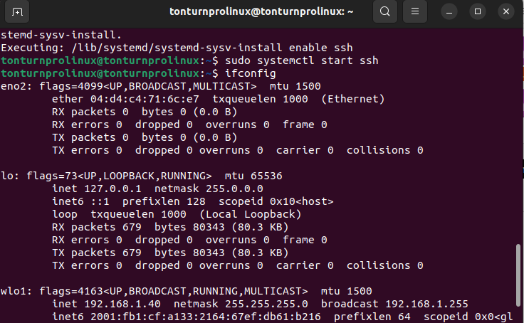

Task 1: Installation of Arduino IDE software on an Ubuntu VM
-
Install the Arduino IDE on the Ubuntu VM.
You can directly install the Arduino IDE from the Ubuntu Software. In my case, I use Arduino IDE version 1.8.19.
-
Open the Arduino IDE and open the Blink sketch from the Arduino Examples.
-
Select an Arduino board as the target, such as Arduino Uno or Nano.
-
Build the Arduino sketch example.
-
Select the serial port corresponding to the attached Arduino board.
While writing this repository, I did not have an Arduino board with me, so I couldn't select the port. However, if you plug in the Arduino board and still don't see the port selection, I will address this issue in the troubleshooting section.
-
Upload the compiled Arduino sketch to the Arduino board.
Use the check mark to verify, and then you can use the upload button to export the code to the Arduino.
Information about the software versions of installed programs:
Screenshots and troubleshooting: If you have problems selecting the port for the Arduino, go to Settings in VirtualBox and navigate to the USB settings section. Ensure that the USB controller is enabled, and then add a new USB filter for the Arduino board.If it still doesn't work, try the following steps:
Task 2: Installation of VS Code IDE software and extensions
-
Install VS Code IDE for Windows (Host OS).
You can directly install the VS code ide from the Ubuntu Software.
-
Install the Remote Development Extension Pack for VS Code IDE.
-
Connect VS Code to the remote machine (Ubuntu).
You need to open ssh server by this following steps
Then use 'ifconfig' to check your IP address; it should be on the line labeled 'inet.'
Open VS Code IDE. Use Ctrl+Shift+P, then add a new SSH host by typing ssh username@ip_address.
-
Install the PlatformIO extension for Remote Development.
Don't forget to download the C/C++ extension pack. PlatformIO depends on this.
-
Create a project using PlatformIO and the Arduino framework.

After installation, you might encounter problems creating a new project. Just use the PlatformIO terminal and follow the instructions in these pictures.
It should look like this.
To create a project, you can either create a new project or use a Project Example. For this case, I will use the Project Example of 'Blink.' Then, select the path of your folder. After that, click on the left side in the explorer to remote file on your host, and find the path to your project.
-
Build the Arduino sketch and upload it to the target.
In this folder, some people might have a 'main.cpp' file instead of 'Blink.io.' It's the same, don't worry. Just copy the example code from the Arduino IDE as mentioned in the first task.
Then, look at the bottom. You will see the build and upload buttons. Use these to upload your work to the Arduino board. Don't forget to check the 'platformio.ini' file to ensure that the platform, board, and framework match your current Arduino board. When successful, it should look like this picture
Information about the software versions of installed programs: VS Code IDE 1.91.1,PlatformIO 3.3,Remote Development v0.25.0
Screenshots and troubleshooting: You might encounter a problem when trying to install PlatformIO, and it can't find the path to your Python. Use this command to fix it: sudo apt install python3.10-venv.